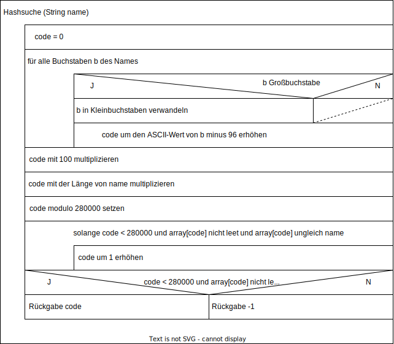

Die Stadtbibliothek Buchholz möchte ihr veraltetes Katalog - und Ausleihsystem modernisieren.
Sie
erhalten den Auftrag. die folgenden Arbeitsschritte auszuführen:
Die Stadtbibliothek Buchholz verspricht ihren Leserinnen und Lesern, jedes gewünschte Buch zu beschaffen. Sofern der Bibliothekar das Buch nicht im eigenen Bestand findet, bittet er die Beschaffungsstelle, das allgemeine Interesse an diesem Buch in Relation zu seinem Beschaffungspreis zu beurteilen. Weniger interessante oder zu teure kBücher werden nach Möglichkeit über die Fernleihstelle besorgte. Interessante Bücher oder solche, die nicht per Fernleihe erhältlich sind, werden angeschafft. Da die Fernleihstelle einige Zeit für die Ermittlung der Lieferbarkeit benötigt, sucht die Beschaffungsstelle in dieser Zeit sicherheitshalber bereits nach einem Buchsponsor. Notfalls wird das Buch aber auch aus Eigenmitteln beschafft.
Zeichnen Sie hierzu ein Aktivitätsdiagramm.
Häufig fragen Leser nach Büchern eines bestimmten Verfassers. Da die Stadtbibliothek einen
Buchbestand von
ca. 300.000 Büchern, verfasst von ca. 180.000 Autoren hat, sollen die Namen dieser Autoren so
abgespeichert
werden, dass sie möglichst schnell gefunden werden.
Ihr Projektleiter schlägt vor, die
Autorennamen mit
Hilfe einer Hashfunktion zu verschlüsseln. Diese Funktion bildet einen Namen auf eine Zahl
zwischen
0 und
280000 ab, die als Arrayindex verwendet wird. Unter diesem Index findet sich dann der
Autorenname.
In einer
späteren Ausbaustufe soll hier ein Verweis auf die Liste aller Bücher von Autoren dieses Namens
stehen.
Zur Ermittlung des Hashwertes wird jeder Buchstabe des Namens zunächst in einen Kleinbuchstaben und dann in dessen ASCII-Wert minus 96 konvertiert. Ein 'A' oder 'a' Zählt daher 1, ein 'Z' oder 'z' 26. Alle Zahlenwerte werden addiert und mit 100 sowie der Länge des Namens multipliziert. Das Ergebnis wird modulo 280000 berechnet.
Einige Beispiele:
| Name | Hashwert |
|---|---|
| Bach | 5600 |
| Goethe | 36000 |
| Klitt | 36000 |
| Schiller | 68800 |
| Shakespeare | 118800 |
| Aristoteles | 157300 |
| Dürrenmatt | 269000 |
| Droste-Hülshoff | 110000 (=390000 % 280000) |
Sollte die errechnete Arrayposition schon von einem anderen Autor belegt sein, wird die jeweils nächste freie Arrayposition genommen.
| unsortiertes Array | alphabetisch sortiertes Array | nach Hashwerten organisiertes Array | |
|---|---|---|---|
| such nach einem vorhandenen Element | |||
| Suche nach einem nicht vorhandenen Element | |||
| Einfügen eines neuen Elements |
a.
b.
c.
Die Länge von Namen ist nicht annähernd gleich verteilt. Vielmehr existieren viele Namen mit 5 - 7 Buchstaben und wenige Namen mit weniger als 3 oder mehr als 12 Buchstaben. Dadurch wird es zu einem Engpass ungefähr um Bereich der Indizes 40000 - 60000 kommen.
d.
| unsortiertes Array | alphabetisch sortiertes Array | nach Hashwerten organisiertes Array | |
|---|---|---|---|
| such nach einem vorhandenen Element | 3 | 2 | 1 |
| Suche nach einem nicht vorhandenen Element | 3 | 2 | 1 |
| Einfügen eines neuen Elements | 1 | 3 | 2 |
Erläuterung (nicht als Antwort verlangt):
Bei einem unsortierten Array muss bei der Suche nach einem vorhandenen Element im Durchschnitt das halbe Array durchsucht werden, bei einer erfolglosen Suche sogar das ganze. Dafür geht das Einfügen (Anhängen ans Ende des Arrays) sehr schnell.
Bei einem sortierten Array sind erfolgreiche und erfolglose Suche gleich schnell, weil man sie abbrechen kann, wenn man die entsprechende Stelle im Alphabet erreicht hat. Außerdem lässt sich die Suche beschleunigen, indem man nicht am Anfang des Array anfängt, wenn der Anfangsbuchstabe eher am Ende des Alphabets liegt. Dafür müssen zum Einfügen alle nachfolgenden Elemente verschoben werden.
Wie schnell das Hashverfahren ist, hängt von der Anzahl der Kollisionen ab. In einem dicht belegten Bereich kann besonders die erfolglose Suche etwas länger dauern. Im Durchschnitt ist die Hashsuche aber das schnellste der drei Verfahren, weil gezielt an der richtgen Stelle gesucht wird.
Ebenso häufig wie nach Autorennamen fragen die Leser nach Buchtiteln. Hier möchte Ihr Projektleiter statt der Hashsuche eine Suche in einem binären Baum implementieren. Dazu hat er die folgende Klasse entworfen.
Unter dem Attribut "links" wird ein Verweis auf einen alphabetisch kleineren (davor liegenden) Titel abgespeichert, unter "rechts" ein Verweis auf einen alphabetisch Größen.
a.
Hier gibt es drei mögliche Lösung, je nachdem, welches Objekt als Wurzel des Baums genommen wird. Am effizientesten für die Suche wäre es, den alphabetisch mittleren Titel zu wählen:
b.
suchen (Suchwort: String): Titel
falls Suchwort < Wortlaut
falls links nicht null
falls Suchwort = links.Wortlaut
ergebnis = links
sonst
ergebnis = links.suchen (Suchwort)
sonst
ergebnis = null
sonst
falls rechts nicht null
falls Suchwort = rechts.Wortlaut
ergebnis = rechts
sonst
ergebnis = rechts.suchen(Suchwort)
sonst
ergebnis = null
Rueckgabe: ergebnis
c.
Die Effizienz hängt davon ab, wie ausgeglichen (balanciert) der Baum ist. Im Idealfall sind nur die Zeiger auf der untersten Ebene null, sodass der Suchweg von der Wurzel bis zu den Blättern möglichst kurz ist.
Die Detailinformationen zu den Büchern wurden bisher in einer Tabelle mit den folgende Spalten
verwaltet:
Besitzt die Bibliothek mehrere Exemplare desselben Buchs, so werden die betreffenden Informationen für jedes Exemplar unter dessen Inventurnummer wiederholt. Alle Exemplare desselben Buchs haben dieselbe Signatur.
Überführen Sie diese Tabelle in ein Datenbankschema in der 3. Normalform.
Kennzeichen Sie alle Primärschlüssel mit PK und alle Fremdschlüssel mit FK.
Zur Verwaltung der ausgellehenen Bücher existieren die beiden folgenden Datenbanktabellen:
Der Fremdschlüssel "Buch" bezieht sich auf die Inventurnummer eines Buchs, die in einer weiteren Tabelle spezifiziert wird.
"Fristdatum" gibt an, wann ein Buch zurückgegeben werden muss. "Rückgabedatum" gibt dagegen an, wann es tatsächlich zurückgegeben wurde.
Alle Datumsangaben sind vom Datentyp DATE im Format YYYY-MM-DD. Dieser Datentyp kann mit Hilfe der folgenden Funktionen verarbeitet werden:
| DAY(datum) | liefert den Tag (1-31) |
| MONTH(datum) | liefert den Monat als laufende Nummer 1-12 |
| YEAR(datem) | liefert das Jahr |
| DAYNAME(datum) | liefert den Wochentag als Text ("MONDAY" usw.) |
| NOW() | aktuelles Datum |
Nicht gesetzte Datumsfeld haben den Wert NULL.
SELECT Buch FROM leser, Ausleihe WHERE Leser.Lesernr=Ausleihe.Leser
AND Name="Zwicker" AND Vorname="Anita" AND MONTH(Ausleihdatum)=1 AND
YEAR(Ausleihdatum)=YEAR(NOW());
SELECT COUNT(*) AS Anzahl FROM Ausleihe WHERE Rueckgabedatum IS NULL;
SELECT PLZ, COUNT(*) AS Anzahl FROM Leser, Ausleihe WHERE Leser.
Lesernr=Ausleihe.Leser GROUP BY PLZ;
SELECT MAX(Anzahl) As Masimum FROM (SELECT COUNT(*) AS Anzahl FROM
Ausleihe GROUP BY Leser);
UPDATE Ausleihe
SET Fristdatum=Fristdatum+1
WHERE (
(Fristdatum > NOW() AND MONTH(Fristdatum)
>
MONTH(NOW()))
OR
YEAR(Fristdatum) > YEAR(NOW())
)
AND
DAY (Fristdatum) = "WEDNESDAY"